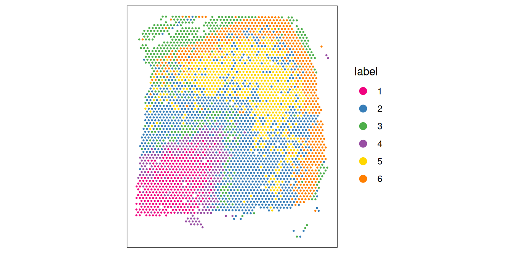

library(SpatialExperiment)
spe <- readRDS("spe_reduceddims.rds")
spe_full <- readRDS("spe_logcounts.rds")10 Clustering
10.1 Introduction
In ST data, we can apply clustering algorithms to identify spatial domains, which represent spatially defined regions consisting of relatively consistent gene expression profiles. For example, spatial domains may consist of regions containing cells from a single cell type or a consistent mixture of cell types.
Several alternative approaches exist for these analyses. For example, we can apply standard clustering algorithms from single-cell workflows to identify cell types without taking any spatial information into account, and then analyze the spatial distributions of these cell types. Alternatively, we can use spatially-aware clustering algorithms that directly take the spatial coordinates of the measurements into account. For larger datasets, there may also be important computational tradeoffs between the various approaches.
It is also important to keep in mind that when we use clustering to define cell types and/or states, these can be defined at various resolutions (or even on a continuum). The optimal number of clusters depends on the biological context – in particular, there is no “true” number of clusters, since this depends on the biological context (e.g. if we are comparing major cell populations vs. comparing rare subtypes), so the choice of the optimal number of clusters requires some judgment and biological interpretation.
Once we have identified spatial domains, these can then be further investigated in additional downstream analyses.
10.2 Load previously saved data
We start by loading the previously saved data object(s) (see Section 7.4 and Section 9.5).
10.3 Non-spatial clustering
10.3.1 Clustering using HVGs
Here, we perform clustering by applying standard clustering methods developed for single-cell RNA sequencing data, using molecular features (gene expression) only. We apply graph-based clustering using the Walktrap method implemented in scran (Lun, McCarthy, and Marioni 2016), applied to the top 50 PCs calculated on the set of top HVGs.
In the context of spatial data, this is the same as applying clustering to identify cell types in single-cell data (although each spot may contain one or more cells, depending on the platform and tissue cell density), and means that we are assuming that biologically informative spatial distribution patterns of cell types can be detected from the molecular features (gene expression).
# graph-based clustering
set.seed(123)
k <- 10
g <- buildSNNGraph(spe, k = k, use.dimred = "PCA")
g_walk <- igraph::cluster_walktrap(g)
clus <- g_walk$membership
table(clus)## clus
## 1 2 3 4 5 6
## 359 1187 447 291 693 547Visualize the clusters by plotting in (i) spatial (x-y) coordinates on the tissue slide, and (ii) reduced dimension space (PCA or UMAP). We use plotting functions from the ggspavis package.
For reference, we also display the ground truth (manually annotated) labels available for this dataset (in spatial coordinates).
From the visualizations, we can see that the clustering reproduces the known biological structure (cortical layers), although not perfectly. The clusters are also separated in UMAP space, but again not perfectly.
# plot clusters in spatial x-y coordinates
plotSpots(spe, annotate = "label",
pal = "libd_layer_colors")
# plot ground truth labels in spatial coordinates
plotSpots(spe, annotate = "ground_truth",
pal = "libd_layer_colors")# plot clusters in PCA reduced dimensions
plotDimRed(spe, plot_type = "PCA",
annotate = "label", pal = "libd_layer_colors")# plot clusters in UMAP reduced dimensions
plotDimRed(spe, plot_type = "UMAP",
annotate = "label", pal = "libd_layer_colors")10.4 Save objects for later chapters
We also save the object(s) in .rds format for re-use within later chapters to speed up the build time of the book.
# save object(s)
saveRDS(spe, file = "spe_clustering.rds")10.5 Spatially-aware clustering
The example above shows that non-spatial clustering can capture some spatial relationships in ST data, primarily if these are due to spatially distributed cell types and where the cell types can be identified from their gene expression profiles alone. However, this does not directly make use of the spatial information contained in the measurements.
In many ST datasets, we can uncover further structure by performing analyses that directly take spatial information into account. Below, we demonstrate examples of these types of analyses, which we refer to as “spatially-aware clustering”.
10.5.1 Clustering using SVGs
One way to perform spatially-aware clustering is to first perform spatially-aware feature selection to identify a set of top spatially variable genes (SVGs) (see Chapter 8) and then use the set of top SVGs as the input for clustering.
In this case, the spatial information is taken into account during the feature selection stage, where we select a set of top SVGs instead of top HVGs. For the clustering stage, we can use the same algorithms as for non-spatial clustering.
Here, we demonstrate an example using nnSVG (Weber et al. 2023) to select the set of top SVGs. Note that in this example, we run nnSVG using a small subset of the dataset for faster runtime. For a full analysis, the full dataset should be used (see Chapter 8 for more details).
# subsample spots for faster runtime in this example
# note: skip this step in full analysis
n <- 100
set.seed(123)
ix <- sample(seq_len(n), n)
spe_nnSVG <- spe_full[, ix] ## note: using full object from logcounts step
# filter low-expressed and mitochondrial genes
# using stringent filtering for faster runtime in this example
# note: use default filtering in full analysis
spe_nnSVG <- filter_genes(
spe_nnSVG, filter_genes_ncounts = 10, filter_genes_pcspots = 3
)## Gene filtering: removing mitochondrial genes## removed 13 mitochondrial genes## Gene filtering: retaining genes with at least 10 counts in at least 3% (n = 3) of spatial locations## removed 33353 out of 33525 genes due to low expression# re-calculate logcounts after filtering
spe_nnSVG <- logNormCounts(spe_nnSVG)Now that we have run nnSVG, we can select at set of top SVGs (instead of HVGs), and use these as the input for the subsequent clustering steps.
# select top SVGs
# note: using small subset in this example
# use larger set (e.g. top 1000 genes) in full analysis
n_top <- 50
ix_top <- order(rowData(spe_nnSVG)$rank)[1:n]
top_svgs <- rowData(spe_nnSVG)[ix_top, "gene_id"]# graph-based clustering
set.seed(123)
k <- 10
g <- buildSNNGraph(spe_nnSVG, k = k, use.dimred = "PCA")
g_walk <- igraph::cluster_walktrap(g)
clus <- g_walk$membership
table(clus)## clus
## 1 2 3 4 5
## 6 6 53 24 1110.5.2 Clustering using concatenated features
An alternative strategy is to perform clustering on a set of concatenated columns of non-spatial and spatial features. For example, we can concatenate columns of non-spatial molecular features (e.g. top PCs calculated on the set of top HVGs) and columns of spatial features (e.g. x and y coordinates). In this case, a tuning parameter to scale the relative value ranges of the columns controls the relative weight between the two data modalities. If the tuning parameter is chosen poorly, either the molecular or spatial features may dominate the clustering. An example of this strategy was used in Maynard et al. (2021).
10.5.3 Spatially-aware clustering algorithms
Alternatively, we can use a spatially-aware clustering algorithm, which directly uses the spatial coordinates of the measurements within the clustering algorithm. Various algorithms have been developed, which have different advantages and make different assumptions, for example identifying spatially compact or spatially connected clusters.
Examples of spatially-aware clustering algorithms include:
BayesSpace: available as an R package from Bioconductor and described by Zhao et al. (2021)
BANKSY: available as an R package from Bioconductor and described by Singhal et al. (2024)
SpaGCN: available as a Python package from GitHub and described by Hu et al. (2021)
PRECAST: available as an R package from CRAN and described by Liu et al. (2023)
References
Hu, Jian, Xiangjie Li, Kyle Coleman, Amelia Schroeder, Nan Ma, David J. Irwin, Edward B. Lee, Russell T. Shinohara, and Mingyao Li. 2021. “SpaGCN: Integrating Gene Expression, Spatial Location and Histology to Identify Spatial Domains and Spatially Variable Genes by Graph Convolutional Network.” Nature Methods 18: 1342–51. https://doi.org/10.1038/s41592-021-01255-8.
Liu, Wei, Xu Liao, Ziye Luo, Yi Yang, Mai Chan Lau, Yuling Jiao, Xingjie Shi, et al. 2023. “Probabilistic Embedding, Clustering, and Alignment for Integrating Spatial Transcriptomics Data with PRECAST.” Nature Communications 14: 296. https://doi.org/10.1038/s41467-023-35947-w.
Lun, Aaron T. L., Davis J. McCarthy, and John C. Marioni. 2016. “A Step-by-Step Workflow for Low-Level Analysis of Single-Cell RNA-seq Data with Bioconductor.” F1000Research 5 (2122). https://doi.org/10.12688/f1000research.9501.2.
Maynard, Kristen R., Leonardo Collado-Torres, Lukas M. Weber, Cedric Uytingco, Brianna K. Barry, Stephen R. Williams, Joseph L. Catallini II, et al. 2021. “Transcriptome-Scale Spatial Gene Expression in the Human Dorsolateral Prefrontal Cortex.” Nature Neuroscience 24: 425–36. https://doi.org/10.1038/s41593-020-00787-0.
Singhal, Vipul, Nigel Chou, Joseph Lee, Yifei Yue, Jinyue Liu, Wan Kee Chock, Li Lin, et al. 2024. “BANKSY Unifies Cell Typing and Tissue Domain Segmentation for Scalable Spatial Omics Data Analysis.” Nature Genetics. https://doi.org/10.1038/s41588-024-01664-3.
Weber, Lukas M., Arkajyoti Saha, Abhirup Datta, Kasper D. Hansen, and Stephanie C. Hicks. 2023. “nnSVG for the Scalable Identification of Spatially Variable Genes Using Nearest-Neighbor Gaussian Processes.” Nature Communications 14: 4059. https://doi.org/10.1038/s41467-023-39748-z.
Zhao, Edward, Matthew R. Stone, Xing Ren, Jamie Guenthoer, Kimberly S. Smythe, Thomas Pulliam, Stephen R. Williams, et al. 2021. “Spatial Transcriptomics at Subspot Resolution with BayesSpace.” Nature Biotechnology 39: 1375–84. https://doi.org/10.1038/s41587-021-00935-2.